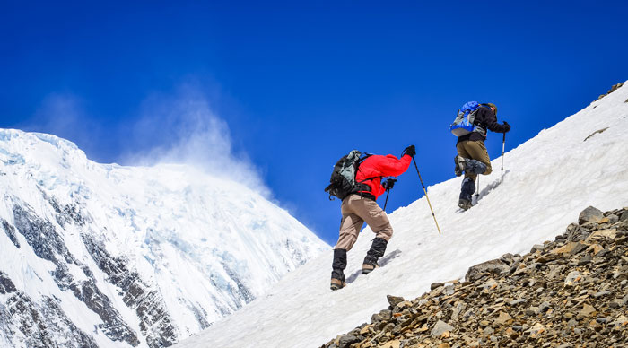
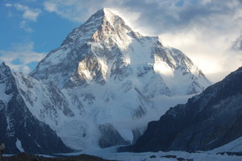
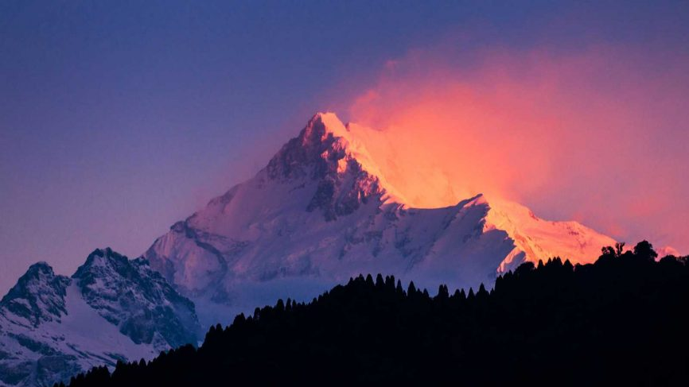
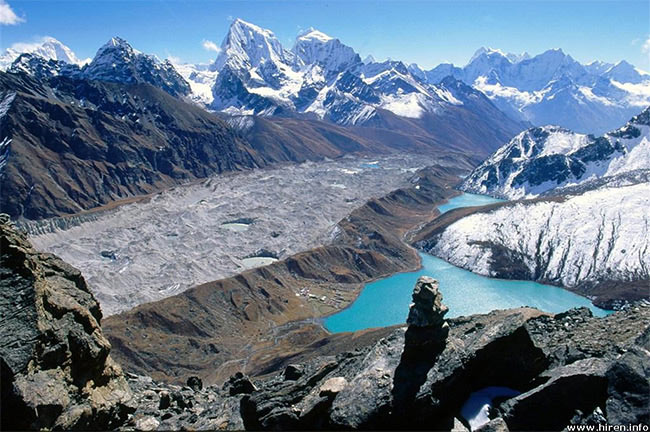
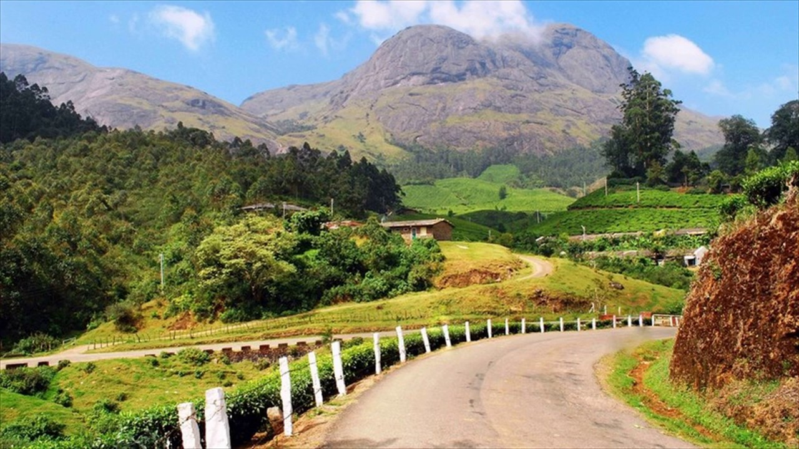
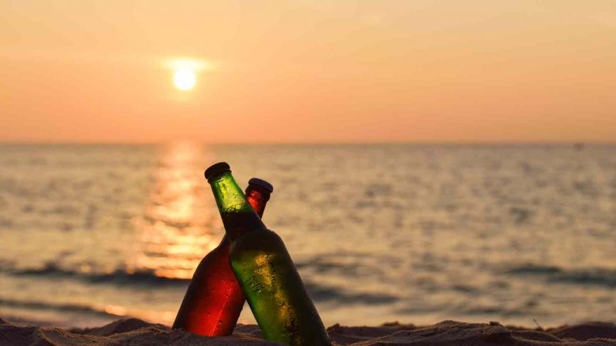

Rahul's Tourist Agency
Welcome to Rahul's Tourist Agency! You'd like to travel? Perfect! Have we got the deals for you! Today, we're looking at mountains, and we'll be helped along by this convenient map made by our data visualization head, Rahul!
K2
Welcome to K2. It's only the highest mountain in India, don't worry. Not a problem at all. No it's not entirely in India, that's true, you'll have to get permission from the Pakistani government before you'll be permitted to make the climb. But what a climb it is! Almost vertical, in fact. It's a gruelling mountain, there isn't a single horizontal stretch, except a slight shoulder at 2400 feet. Enjoy the sheer rock faces and the vertigo. 80 deaths, 8611 metres. It's a killer mountain. Don't call me a bitch, it's a great trip! Who's going?
Kanchenjunga
Allright, allright, so K2 sounded a bit too much like suicide. We've got just the mountain for you. Kanchenjunga has fewer deaths, is slightly lower, and is a teeny tiny bit further away from Pakistan. (65, 8586, and 2841 km) We've got quite a few nice comfortable spots for you to start your leisurely trek. It gets a bit cold, true, and you do have to watch out for altitude sickness. No I am not a bitch, thank you very much.The Northern Himalayas

Okay okay, I get the general trend. Not the biggest fan of the Northern part of the Himalayas. Let's look a little bit further south then.
Eastern India
It's the Northeast! Woohoo! Lots of mountains to climb here, there's the nice unassuming Sandakphu-Phalud trek in West Bengal, only a few people die, it gets a bit chilly. But it's not that high, not that dangerous. Seeing a trend here? Watch out for Amsot Peak though, a somewhat high climb (7782 meters). Nothing much to see here. Still too cold for you? No matter. On to lower ground! And stop calling me a bitch.
The Western Ghats
Here we go. Southern India. Warm, sunny, welcoming with a vast array of wildlife to keep you company. It's the Western Ghats, ladies and gentlemen! It's nice, cozy, only a tiny bit chilly, and not a single death in sight. Naturally, since the mountain is absolutely tiny. Now what's the matter? Oh you want a beach! Why didn't you tell em so? Let's go!
Goa
Okay, Goa. Time to sit back and relax. Life is nice. No deaths at sea level, after all. At least, not from climbing.